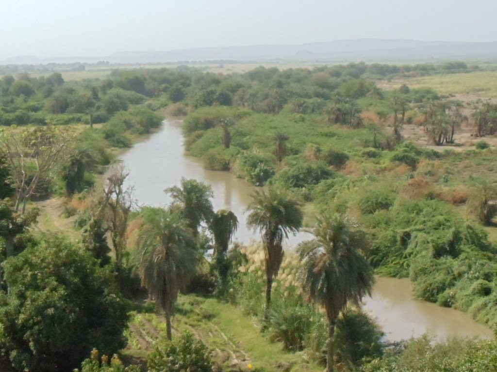

Semaw et al. · East Gona’s early stone tools (Nature, 1997) ↗
The East Gona report documents the location, geological context and age of the early finds.
Deep dives / Africa & Middle East
East Gona first helped establish the deep age of the Oldowan. Excavations elsewhere in the Gona research area broadened the record, making it possible to compare choices of stone and ways of making flakes across nearby localities.
The map shows the Gona archaeological landscape, grouping several excavated localities.

Approximate public research locality on a modern terrain map.
The East Gona report established artifacts in deposits dated to approximately 2.6–2.5 million years ago. Excavations at Ounda Gona South, including OGS-6 and OGS-7, extended the sample of stone artifacts and associated fauna near the older end of that range. [2] [1]
Comparisons among early Gona assemblages identify differences in raw material selection and flake production. Hominins working stone chose from locally available cobbles, and toolmaking strategies varied even within this narrow time and geographic window. [3]
The Gona teams used volcanic layers and paleomagnetism to place the stone assemblages in time. Preserved bones and stone can occur together, but the degree of disturbance and the origin of bone marks condition what each excavation can reveal about food processing. [1] [3]
Placing Gona Oldowan localities in human-family chronology depends on bracketing stratified volcanic ash layers (40Ar/39Ar), cosmogenic nuclide burial ages, or paleomagnetic reversals above and below the artifact or footprint horizon rather than dating stone flakes in isolation. Reworking, fluvial transport, and cut-mark/percussion equifinality remain key variables evaluated in every new study. [1] [2]
Rather than identifying a single exclusive ancestor, this locality serves as a tightly constrained chronological anchor that must be compared side-by-side with contemporary Rift, southern, north African, and Eurasian finds inside the playable Human Family map. [1]
Open the source maps for their original detail, legends and dates. Their coverage and reproduction terms belong to the issuing institution.
The East Gona report documents the location, geological context and age of the early finds.
Open this era on global Explore ↗ Open Africa & Middle East atlas ↗ Climate, sea level & ice-sheet context ↗
Sources checked and linked above; geological and historical dating methods follow the primary papers.